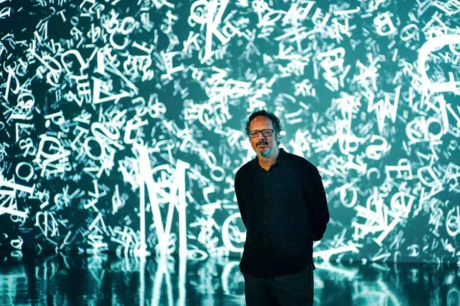

¿Quién es Rafael Lozano-Hemmer?
Rafael Lozano-Hemmer es un artista contemporáneo reconocido por sus
instalaciones interactivas que combinan tecnología, arquitectura y
participación del público. Su trabajo se centra en la creación de obras
que requieren la presencia activa de las personas para completarse,
transformando al espectador en protagonista.

Arte interactivo y participación
Sus proyectos utilizan sensores, proyecciones, luces y
sistemas digitales para responder en tiempo real a estímulos
como el movimiento, la voz o los datos biométricos. Este
enfoque genera experiencias dinámicas donde cada interacción
produce un resultado único e irrepetible.
A través de estas obras, explora temas como la vigilancia, la identidad,
la memoria y la relación entre lo individual y lo colectivo. Su práctica
se sitúa en el cruce entre arte, ciencia y tecnología, con un fuerte énfasis
en lo experiencial.